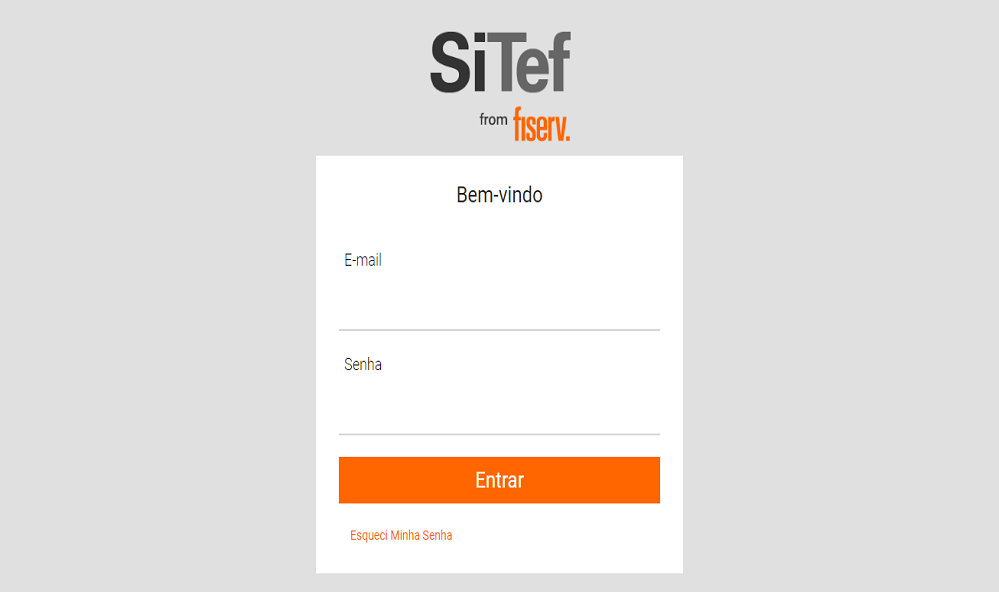

SiTef Express
Utilizado para consultar as transações TEF realizadas no ERPM_PDV, também é possível confirmar ou cancelar uma transação caso ela esteja pendente, porém, apenas o responsável pelo setor "Central de Operações" pode realizar essas duas ações.